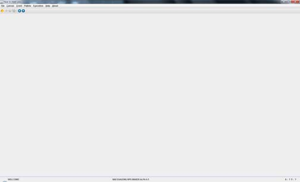
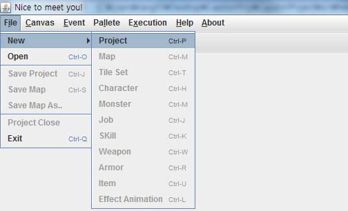
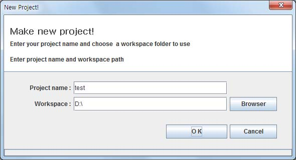
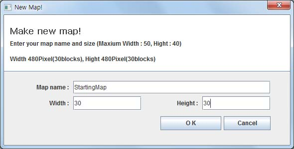

|
Step 1. 프로젝트 생성

- 처음 실행 화면
처음 실행하면 위와 같은 화면을 볼 수 있습니다.
게임을 만들기 위해서는 일단 프로젝트를 생성해야 합니다.
기본적으로 1개의 프로젝트로 1개의 게임이 완성 됩니다.

- 새 프로젝트 생성
여기서 File -> New -> Project 를 선택 합니다.
Ctrl + P 가 단축키 입니다.

- 프로젝트명과 위치 설정
프로젝트 명과 위치를 지정합니다. OK 버튼을 누르면 프로젝트가 생성이 시작됩니다.
프로젝트 생성에는 약간의 시간이 필요합니다. 기다리면 프로젝트 생성이 완료됩니다.

- 새로운 맵 생성
기본적으로 새로운 프로젝트가 생성되면 자동으로 맵을 하나 생성하도록 합니다.
맵 이름과 가로, 세로 블록 크기를 지정하도록 합니다.
1블록은 16픽셀입니다. 가로와 세로의 크기를 입력하면 블륵 크기와 픽셀크기를 알 수 있습니다.
최대 가로 50블록 세로 40블록까지 지정이 가능 합니다.
이렇게 새 프로젝트를 만들고 1개의 맵을 만들 준비가 되었습니다.
2장 맵 작성에서 맵을 만들어 봅시다!
|